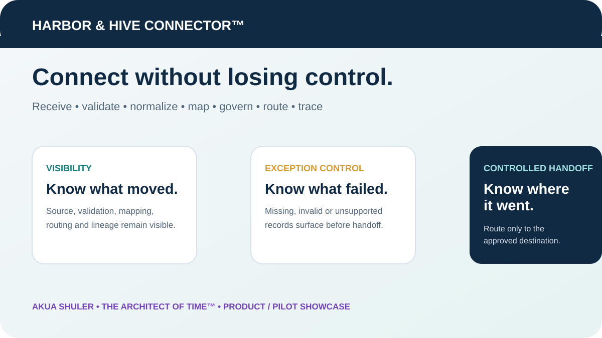

WORK SAMPLE 01 — TAX & REGULATORY COMPLIANCE
Multi-jurisdiction tax and compliance
Coverage shown: 50-state indirect tax • Canada GST/HST/PST/QST • property tax • licensing • SEC registrations • annual reports • multi-state compliance
Georgia transaction → checks → workpaper
Québec CAD → GST/QST → preparation workpaper
Compliance calendar & obligation tracker
| Area | Example scope | What I track | Status |
|---|---|---|---|
| Business Licensing | Multi-state operations | Renewal date • jurisdiction • documentation | Current |
| SEC Registrations | Entity compliance | Requirement • due date • support • filing status | Review |
| Annual Reports | Registered entities | State • due date • payment • confirmation | Upcoming |
| Property Tax | Multiple locations | Assessment • filing • payment • reconciliation | In Process |
WORK SAMPLE 02 — NEXUS INTELLIGENCE
Spot the obligation before it becomes a cleanup project
Sales + transactions + threshold + tax impact + registration timing + filing action + evidence.
MonitorBelow 80%
Watch80–99%
Crossed100%+
WORK SAMPLE 03 — MULTI-STATE ACCRUALS & RECONCILIATION
Multiple operations. Multiple states. One controlled view.
| Operation | State | Expected Liability | Prior Payments | Adjustment | Actual Liability |
|---|---|---|---|---|---|
| Manufacturing | GA | ||||
| Engineering | TX | ||||
| SaaS | CA |
Source-to-return reconciliation
WORK SAMPLE 04 — ANALYTICS & BI
A KPI should lead to the next question
High-risk exception → source
Nexus watch → jurisdiction
Matched item → evidence
WORK SAMPLE 05 — DATA QUALITY & GOVERNANCE
Find the problem before it moves downstream
WORK SAMPLE 06 — SYSTEMS, INTEGRATION & PRODUCT DESIGN
Harbor & Hive Connector™
What this demonstrates: integration architecture • source-to-canonical mapping • data validation • exception control • governed routing • audit lineage • client packaging • product communication
Connect systems without losing control of the handoff.
I designed this product concept to show how source data can move through a visible, governed connection layer instead of disappearing inside an opaque point-to-point integration.
The Connector preserves where data came from, what validation and mapping occurred, what failed, what required review, and where the approved record was routed.

ABOUT ME
A career built around solving problems
My experience spans indirect tax, accounting, treasury, finance, compliance, data, analytics, technology, procurement and contracts across manufacturing, construction, engineering and SaaS. I look for how those areas connect and what needs to happen to get the job done.
My background combines hands-on professional experience, military service, formal education and continuous independent learning. I use the tools, data, research and experience available to me to solve real business problems and create practical solutions people can actually use.
CAREER CONTEXT
The experience behind the work samples
Tax & Treasury Leadership — multistate compliance, close, reconciliations, notices, controls, payments and cross-functional leadership.
Senior Indirect Tax — nexus, taxability, property tax, registrations, filings, research, audits and process improvement.
Tax Management & Practice Leadership — preparation, review, client advisory, staff leadership and practice management.
Finance & Accounting — financial analysis, accruals, reconciliations, reporting and discrepancy research.
Budget, Procurement & Contracts — budgeting, purchasing, vendor/contract administration and controlled documentation.
Military Information Management — records, reporting, data validation, administrative systems and disciplined execution.
CONTACT
Connect with me
Stone Mountain, Georgia • Open to opportunities across indirect tax, tax technology, data governance, analytics/BI, financial controls and closely aligned roles.